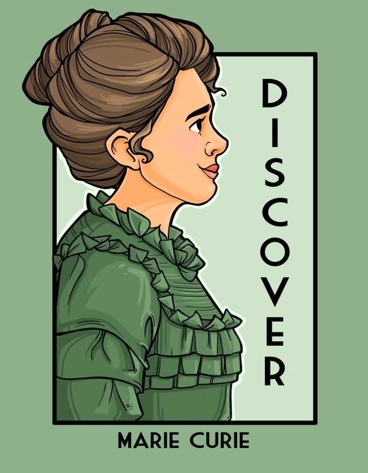
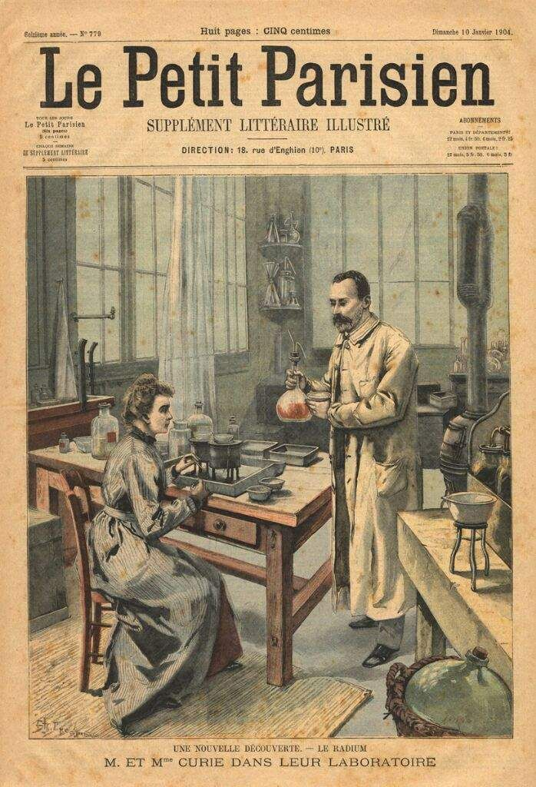
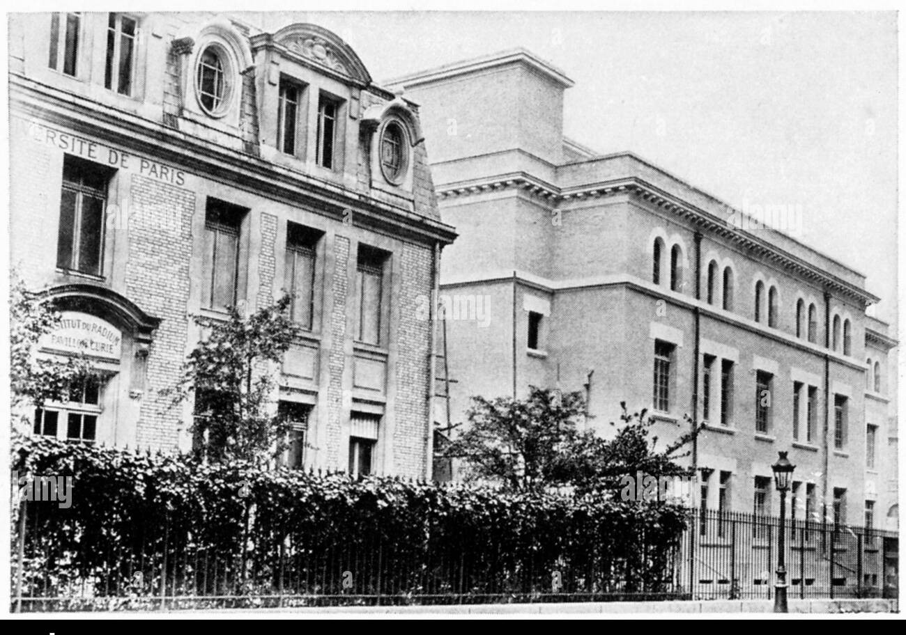

 Marie Curie nació el 7 de noviembre de 1867 en Varsovia, Polonia. Desde joven, mostró un gran interés por la ciencia, pero debido a las limitaciones educativas para las mujeres en su país, se trasladó a Francia para estudiar en la Universidad de la Sorbona. Allí conoció a Pierre Curie, con quien se casó y trabajó en investigaciones sobre la radiactividad, descubriendo dos elementos: el polonio y el radio.
En 1903, Marie y Pierre Curie, junto con Henri Becquerel, recibieron el Premio Nobel de Física por sus estudios sobre la radiactividad. Tras la muerte de su esposo en 1906, Marie continuó su trabajo y en 1911 recibió el Premio Nobel de Química por el descubrimiento y estudio del radio y el polonio. Fue la primera mujer en obtener un Nobel y la única persona en la historia en ganar dos en diferentes disciplinas científicas.
A lo largo de su vida, Marie Curie fundó el Instituto Curie y contribuyó al desarrollo de la medicina con el uso de la radiactividad en el tratamiento del cáncer. Su exposición prolongada a la radiación afectó su salud, y falleció el 4 de julio de 1934 debido a una anemia aplásica. Su legado sigue siendo fundamental en la ciencia, la medicina y la lucha por la igualdad en la educación y la investigación.
A lo largo de su vida, acumuló los máximos honores: primera en la agregación de matemáticas para niñas en 1896, primera mujer en ganar un Premio Nobel en 1903, primera mujer en ser nombrada profesora en la Sorbona en 1908, primera (y única) mujer en ganar un segundo Premio Nobel en 1911, primera mujer en ser admitida en la Academia Francesa de Medicina en 1922. Por último, pero no menos importante, la primera mujer en ser enterrada en el Panteón por sus méritos. Desde 1995 descansa allí junto a su marido, Pierre Curie.
Su encuentro con Pierre Curie, ya un científico reconocido por aquel entonces, frustró sus planes de regresar a Polonia con sus diplomas. Se casaron en 1895. Al año siguiente, decidió dedicar su tesis doctoral a los recientes descubrimientos de Henri Becquerel: inesperadamente, este físico francés, que había guardado sales de uranio en un cajón, acababa de descubrir que emitían rayos espontáneos capaces de imprimir una placa fotográfica. Al intentar cuantificar y cualificar la actividad de estos rayos, Pierre y Marie Curie identificaron otros elementos con las mismas propiedades: el polonio y, posteriormente, el radio.
Pierre Curie fue atropellado por un carruaje tirado por caballos y falleció en 1906, dejando a Marie Curie sola para heredar su cátedra en la Facultad de Ciencias de la Universidad de París y la dirección de su laboratorio de física en la rue Cuvier. En este puesto, en 1909 supervisó la creación del Instituto del Radio, fruto del deseo conjunto del Instituto Pasteur y la Universidad de París de dotar a Francia de un centro de investigación sobre la radiactividad y sus posibles aplicaciones médicas. El instituto reúne dos laboratorios con competencias complementarias: el laboratorio de física y química, dirigido por Marie Curie, y el laboratorio Pasteur, dedicado al estudio de los efectos biológicos y médicos de la radiación, dirigido por el médico Claudius Regaud. La construcción del instituto, ubicado en la rue d'Ulm, finalizó en 1914.
Licenciada en física y matemáticas gracias al 'pacto de damas' que había contraído con su hermana, Marie Curie se convirtió, a principios del siglo XX, en la primera mujer en la historia en recibir un premio Nobel. El de física lo compartió con su marido Pierre Curie, pero unos años más tarde, en 1911, recibiría de nuevo el máximo reconocimiento de la Academia sueca, con el premio Nobel de Física.
la revista Crónica despidió a Marie Curie con estas palabras: "La insigne mujer que, al conquistar para la ciencia un mundo, aportó un nuevo y maravilloso remedio contra el dolor".
Fue la primera persona en recibir dos Premios Nobel en diferentes campos: Física en 1903 y Química en 1911.
Realizó gran parte de su investigación en un laboratorio descrito como "un cruce entre un establo y un cobertizo de papas".
Su hija, Irène Joliot-Curie, también ganó un Premio Nobel de Química en 1935 junto a su esposo.
Fue la primera mujer en ser profesora en la Universidad de la Sorbona, ocupando la cátedra de Física tras la muerte de su esposo.
Junto a su esposo Pierre, descubrió dos elementos radiactivos: el polonio y el radio.